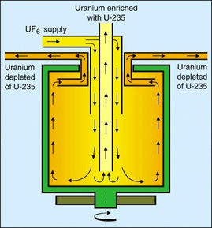

Gas Centrifuge
 This process uses powerful centrrfuges to rotate cylinders containing UF6 at high speeds. Enrichment occours due to the fact that the heavier molecules containing U238 move to the outside of the cylinder. The slightly enriched gas at the center is collected and moved to the next cylinder. A centrifuge facility contains trains of centrifuge machines which are connected both in series and in parallel. The machines are interconnected and at the final withdrawl point, the gas is enriched to the desired amount.
Other Methods:
Source: US Nuclear Regulatory Comission